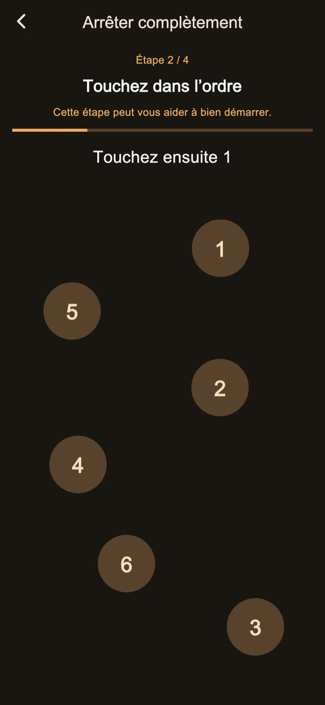
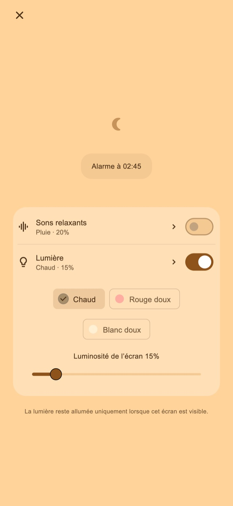

Sons relaxants
Écoutez la pluie, les vagues ou du bruit blanc. Le son démarre uniquement si vous l’activez et s’estompe pour s’arrêter à la première alarme.
Alarme vibrante pour la sieste et après le coucher des enfants
Pour les siestes qui se prolongent et les parents qui s’endorment en couchant leur enfant.
01Motifs de vibration
La durée et le rythme varient pour se distinguer de vos notifications habituelles. Cette sensation inhabituelle est conçue pour vous aider à remarquer l’alarme et à vous réveiller.
Impulsions courtes, longues ou répétées. Choisissez parmi quatre modes de base : aléatoire, notifications, plutôt longues ou plutôt courtes. Les durées et les intervalles varient pour changer le rythme. Essayez-les avant de régler l’alarme.
Motifs de vibration
02Plusieurs rappels
Arrêtez seulement l’alerte en cours pour conserver les suivantes, ou terminez la série pour annuler le reste.
L’enregistrement du nombre et de l’intervalle est une fonction Premium.
Plusieurs rappels
Terminer une fois levé
03Tâches d’arrêt
Calculs, nombres à toucher dans l’ordre, appui long et touches répétées accompagnent l’arrêt et le report. Les étapes standard sont incluses. Leur modification et leur combinaison nécessitent Premium.

Écran Nuit
Réglez la luminosité et l’apparence de l’horloge. Vous pouvez masquer l’affichage après un moment sans interaction, puis toucher l’écran pour retrouver l’heure et les commandes.
Choisissez une durée, par exemple 30 minutes, ou une heure de réveil.
Gardez l’écran de nuit ouvert. Activez les sons ou la lumière si vous le souhaitez.
Effectuez les étapes d’arrêt et terminez la série lorsque vous êtes levé.
Sons relaxants et lumière réglable
Pour la sieste ou le coucher de votre enfant. Activez-les depuis l’écran de nuit quand vous en avez besoin.
Écoutez la pluie, les vagues ou du bruit blanc. Le son démarre uniquement si vous l’activez et s’estompe pour s’arrêter à la première alarme.
Choisissez une lumière chaude, rouge pâle ou blanche douce, et ajustez son intensité.
Les fonctions de base sont gratuites

Gratuit / Premium
Quatre modes de vibration, arrêt et report standard, écran de nuit, sons et lumière sont inclus. Certaines pages affichent des publicités.
| Fonction | Gratuit | Premium |
|---|---|---|
| Motifs de vibration | ✓ | ✓ |
| Plusieurs rappels | Réglages standard | Personnalisable |
| Tâches d’arrêt | Réglages standard | Personnalisable |
| Écran Nuit / Sons relaxants / Lumière | ✓ | ✓ |
| Créez et modifiez vos propres vibrations. | — | ✓ |
| Supprimez toutes les publicités. | — | ✓ |
Choisissez une formule mensuelle ou un achat unique. La formule mensuelle se renouvelle automatiquement ; gérez-la ou résiliez-la dans les réglages de votre compte sur la boutique. Les prix et conditions figurent sur l’écran d’achat.
Questions fréquentes
Pour utiliser les vibrations personnalisées de l’app, gardez l’écran de nuit ouvert après avoir réglé l’alarme. Le verrouillage par le bouton latéral ou le passage à une autre app confie la vibration à iOS : le rythme et l’intensité personnalisés ne s’appliquent plus. Vérifiez les autorisations et les réglages de vibration, puis lancez un test avant utilisation.
Écoutez la pluie, les vagues ou du bruit blanc. Le son démarre uniquement si vous l’activez et s’estompe pour s’arrêter à la première alarme. Choisissez une lumière chaude, rouge pâle ou blanche douce, et ajustez son intensité.
Quatre modes de vibration, arrêt et report standard, écran de nuit, sons et lumière sont inclus. Certaines pages affichent des publicités. Supprimez toutes les publicités. Réglez le nombre d’alertes et leur intervalle. Modifiez les étapes d’arrêt et de report. Créez et modifiez vos propres vibrations. Choisissez une formule mensuelle ou un achat unique. La formule mensuelle se renouvelle automatiquement ; gérez-la ou résiliez-la dans les réglages de votre compte sur la boutique. Les prix et conditions figurent sur l’écran d’achat.
Télécharger
Alarme vibrante pour la sieste et après le coucher des enfants
Les fonctions de base sont gratuites
iPhone: iOS 26.1+ / Android: 8.0+